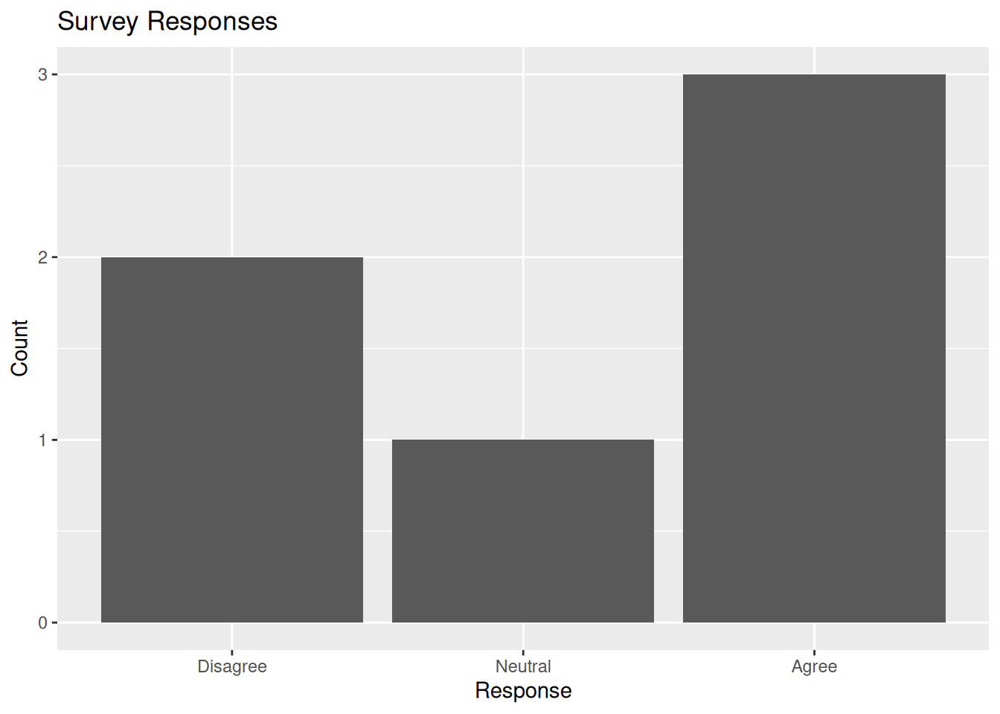

Mastering Categorical Data for Analysis and Visualization
Author
Raju Rimal
Published
November 30, 2024
Modified
March 19, 2025
Factors are an essential data type in R, designed to handle categorical data. They enable efficient data storage, sorting, visualization, and modeling. This article explores the fundamentals of factors, factor manipulation techniques, and the use of the forcats package for advanced functionality.
1. Understanding Factors
Factors are used to represent categorical data. They store unique categories as levels and map them to integer codes for efficiency.
The forcats package provides powerful functions for working with factors.
library(forcats)# Relabel levels using fct_recoderelabelled_factor <-fct_recode( ordered_factor, Low ="L", Medium ="M", High ="H")print(relabelled_factor)
[1] Low Medium High Medium Low
Levels: Low Medium High
# Check if an object is a factoris.factor(ordered_factor)
[1] TRUE
9. Practical Example
Scenario: Categorizing and Sorting Survey Responses
# Survey dataresponses <-c("Agree", "Neutral", "Disagree", "Agree", "Disagree", "Agree")# Convert to factor with custom levelsfactor_responses <-factor( responses, levels =c("Disagree", "Neutral", "Agree"))# Plot the responsesresponse_df <-data.frame(responses = factor_responses)ggplot(response_df, aes(x = responses)) +geom_bar() +labs(title ="Survey Responses", x ="Response", y ="Count" )

10. Exercises for Practice
Convert a numeric dataset to a factor and assign meaningful labels to its levels.
Reorder a factor based on the median value of another variable.
Visualize a dataset with multiple factors using ggplot2.
Conclusion
Factors are a cornerstone of R programming for handling categorical data. Whether you’re visualizing responses, sorting data, or building models, understanding how to work with factors is essential. By leveraging tools like the forcats package, you can efficiently manage and manipulate categorical data to unlock deeper insights.r